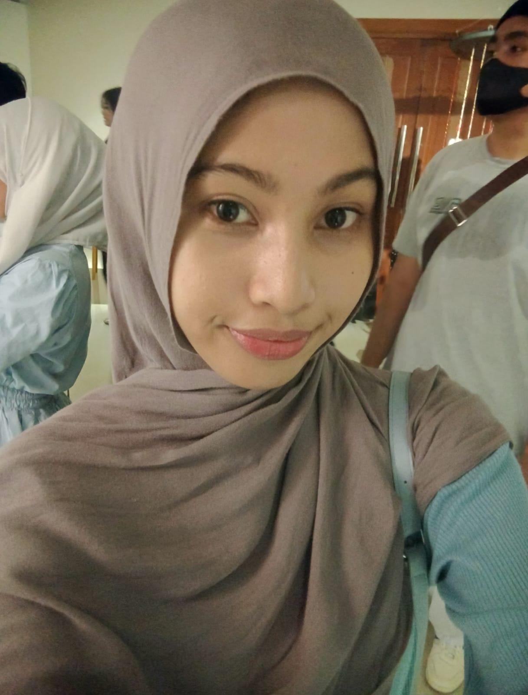

2026–PRESENT
Universitas Tanjungpura
Information Systems
Mahasiswa Program Studi Sistem Informasi yang sedang memulai perjalanan akademik dan mengembangkan pengetahuan di bidang teknologi serta pengelolaan informasi.
A LITTLE SPACE ABOUT ME ✦
A collection of my stories, experiences, and little steps toward becoming who I want to be.
Get to know me ↗
Halo, aku Lirik Syabilla Al-Musakinah, biasa dipanggil Lirik. Aku berasal dari Natuna dan saat ini menempuh pendidikan di Program Studi Sistem Informasi, Universitas Tanjungpura.
Aku tertarik untuk terus belajar, mengeksplorasi hal-hal baru, dan mengembangkan diri melalui pengalaman akademik maupun kegiatan kreatif. Bagiku, setiap langkah kecil adalah bagian dari perjalanan untuk terus bertumbuh.
2026–PRESENT
Information Systems
Mahasiswa Program Studi Sistem Informasi yang sedang memulai perjalanan akademik dan mengembangkan pengetahuan di bidang teknologi serta pengelolaan informasi.
2026
Senior High School
Menyelesaikan pendidikan sekolah menengah atas dan memperoleh pengalaman melalui kegiatan ekstrakurikuler serta publikasi sekolah.
Setiap pengalaman mengajarkanku sesuatu yang baru.
PUBLICATION
Divisi Artikel. Mendapatkan pengalaman dalam kegiatan publikasi sekolah melalui bidang penulisan artikel.
ORGANIZATION
Mengikuti kegiatan Pramuka semasa sekolah sebagai bagian dari pengalaman berorganisasi dan bekerja sama.
CREATIVITY
Mengikuti kegiatan tari sebagai ruang untuk berekspresi, mengeksplorasi kreativitas, dan mendapatkan pengalaman baru.
04 / CONTACT
Thank you for visiting my little universe. Feel free to connect with me and say hello!
Email me ↗ Instagram ↗